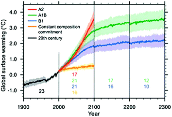
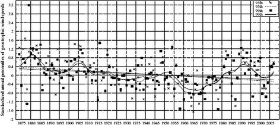
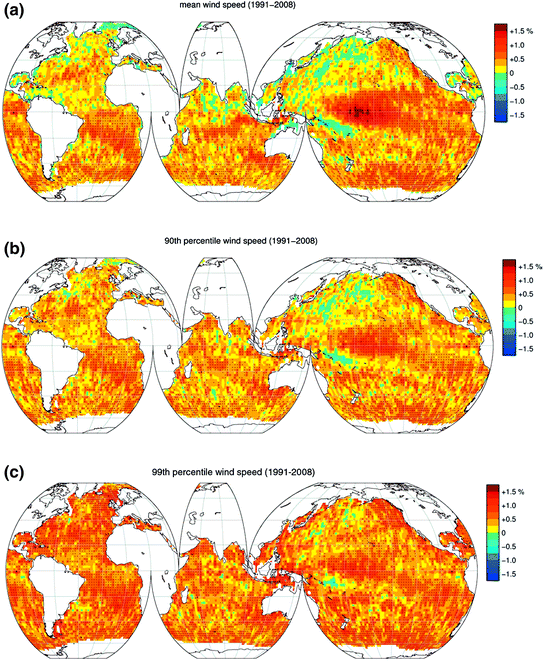
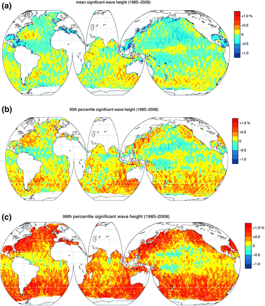
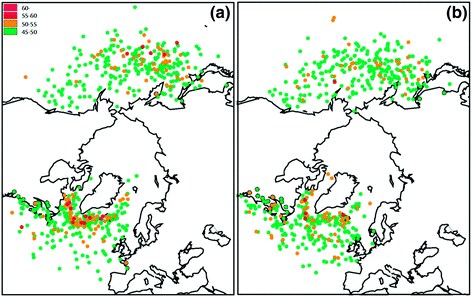
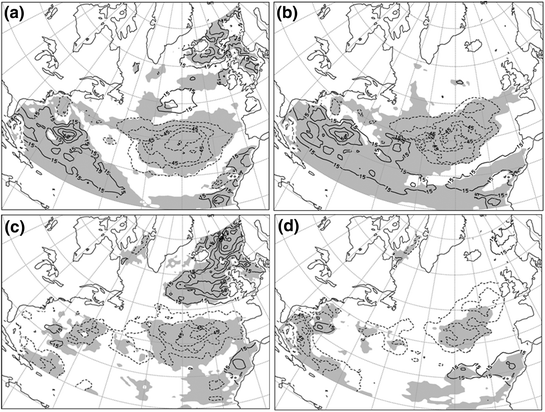

2.1 IPPC Scenarios
The Intergovernmental Panel on Climate Change (IPCC) was established jointly by the World Meteorological Organization (WMO) and the United Nations Environment Programme (UNEP) in 1988. The mandate was to assess scientific information related to climate change, to evaluate the environmental and socio-economic consequences of climate change, and to formulate realistic response strategies. The assessments provided by IPCC have since then played a major role in assisting governments to adopt and implement policies in response to climate change. In particular the IPCC has responded to the need for authoritative advice of the Conference of the Parties (COP) to the United Nations Framework Convention on Climate Change (UNFCCC), which was established in 1992, and its 1997 Kyoto Protocol. Since its establishment in 1988, the IPCC has produced a series of Assessment Reports (1990, 1995, 2001 and 2007). All Assessment Reports consist of three parts: The Science of Climate Change, Impacts, Adaptations and Mitigation of Climate Change: Scientific-Technical Analyses and Economic and Social Dimensions of Climate Change. The last two also include a Synthesis report. In addition, IPCC Special Reports, Technical Papers and Methodology Reports have become standard works of reference, widely used by policymakers, scientists, other experts and students, e.g. the “Special Report on Managing the Risks of Extreme Events and Disasters to Advance Climate Change Adaptation” (IPCC 2012, hereafter called SREX. A “Summary for Policy Makers” was issued by IPCC in 2011).
The IPCC 2007 Fourth Assessment Report on Climate Change (hereafter called AR4; IPCC 2007a) provides information for policymakers, scientists and engineers on the current understanding of scientific, technical and socio–economic aspects of climate change. It consists of the following sub-reports:
- The AR4 Synthesis Report.
- The Working Group I Report “The Physical Science Basis”, hereafter AR4.1.
- The Working Group II Report “Impacts, Adaptation and Vulnerability”.
- The Working Group III Report “Mitigation of Climate Change”.
A summary of the findings of the three Working Group reports can be found in the AR4 Synthesis Report (IPCC 2007a), which specifically addresses the issues of concern to policymakers in the domain of climate change. It confirms, with little uncertainty, that climate changes observed now are mostly a result of human activities. The report illustrates the impacts of global warming being already under way and to be expected in the future, and describes the potential for adaptation of society to reduce its vulnerability. Finally, it presents an analysis of costs, policies and technologies intended to limit the extent of future changes in the climate system.
In the following we will only consider the results from the Working Group I Report “The Physical Science Basis” (IPCC 2007b).
The extent to which human activities will impact future climate conditions depend to a high degree on how the international society reacts to the prospect of significant global warming with its consequences for changes in regional and local climate. AR4 considered four scenario classes based on various socio–economic developments and their impacts on emissions of greenhouse gases. Special attention was given to issues of human well-being and development. Technologies, policies, measures and instruments as well as barriers to implementation were addressed in the AR4 reports along with synergies and trade-offs.
The scenarios adopted by AR4 have been used to project climate changes in the 21st century and beyond. The A* scenarios are pessimistic ones (higher increase of the Earth surface temperature) while the B* scenarios are optimistic ones with respect to reduction of greenhouse gases. Thus choice of a scenario will affect results and introduce uncertainties in climate change projections.
A1. This family describes a future world of very rapid economic growth and a global population that peaks in mid-century and declines thereafter. It also assumes rapid introduction of new and more efficient technologies. The A1 family has three sub-groups that describe alternative directions of technological change in the energy system: A fossil-intensive one (A1FI); one based on non-fossil energy sources (A1T); and one that is a balance across all sources (A1B).
A2. This family describes a very heterogeneous world. Selfreliance and preservation of local identities are important factors and the population increases continuously. Economic development is primarily regionally oriented and per capita economic growth and technological change more fragmented and slower than other storylines.
B1. This family describes a convergent world with a global population, that peaks in mid-century and declines thereafter, as in the A1 family, but with economic structures that change rapidly toward a service and information economy. The intensity in material consumption is reduced and clean and resource-efficient technologies are introduced. The emphasis is on global solutions to economic, social and environmental sustainability, including improved equity, but without additional climate initiatives.
B2. In the B2 family the global population is continuously increasing but at a rate lower than A2. Emphasis is on local solutions to economic, social and environmental sustainability, intermediate levels of economic development, and less rapid and more diverse technological change than in the B1 and A1 storylines. While the B2 family of scenarios is oriented towards environmental protection and social equity, it focuses on local and regional levels.
In addition to these four scenario families some of the reviewed papers also include the IPCC IS92a scenario (IPCC 2001), in which the concentration of CO2 in the atmosphere effectively increases by 1 %/year from 1990. This is often considered to be the “business as usual” scenario.
Figure 2.1 shows the multi-model means of global surface warming relative to 1980–1990 for three of the scenarios ( IPCC 2007b).

Fig. 2.1
Projected changes of global surface warming. Lines are means, shading are + one standard deviation of individual model annual means. From IPCC (2007b)
Table 2.1 shows the projected global average surface warming and range for the scenarios mentioned above (IPCC 2001, 2007b).
Scenario | Projected temperature change (oC increase between 1980–1999 and 2090–2099) | |
|---|---|---|
Best estimate | Likely range | |
Constant CO2-concentration at 2000 level | 0.6 | 0.3–0.9 |
IS92a (IPCC 2001) | 2.3 | 1.9–3.4 |
B1 | 1.8 | 1.1–2.9 |
A1T | 2.4 | 1.4–3.8 |
B2 | 2.4 | 1.4–3.8 |
A1B | 2.8 | 1.7–4.4 |
2.2 Climate Change and Variability
Climate differs with geographic location and is influenced by, amongst other factors, latitude and distance from the oceans. Climate has always changed with time. The variations observed today are due to:
- Natural variability, originating from the internal dynamics of the Earth’s system and occurring usually on time scales a few years via decadal to multi-decadal, but much longer cycles due to movement of poles may also occur, e.g. 21000 year Milankovitch cycles.
- Climate change due to external forcing, such as changes in solar radiation and volcanic activity, varying on time scales from years to millennia.
- Anthropogenic climate change, caused by human activities and in particular emissions of greenhouse gases (GHG), which takes place over a few decades to centuries.
In the AR4.1 report the IPCC analysed the chain from GHG emissions and concentrations, via radiative forcing and to potential resultant climate change. The set of AR4 reports also evaluated to what extent observed changes in climate and in physical and biological systems can be attributed to natural or anthropogenic causes. It was concluded that warming of the climate system is unequivocal, as it is now evident from observations of increases in global average air and ocean temperatures, widespread melting of snow and ice and rising global average sea level. According to the AR4.1 report there is very high confidence that the net effect of human activities since 1750 has contributed significantly to the global warming. Global GHG emissions due to human activities have grown since pre-industrial times, with an increase of 70 % between 1970 and 2004. The global GHGs emission needs to be reduced significantly before 2030, in order to limit the warming to 2 °C (IPCC 2007a).
The SREX report (IPCC 2012) assessed the scientific literature, including in particular investigations carried out after the AR4.1 report was issued. Emphasis is on the relationships between climate change and extremes of weather events and the implications for society. The SREX operates with degrees of confidence in observed trends and projections, i.e. low, medium and high, as well as with various degrees of likelihood that there will be certain developments, ranging from “exceptionally unlikely” to “virtually certain”. It is pointed out that assigning “low confidence” in a specific extreme on regional or global scale neither implies nor excludes the possibility of changes in this extreme. Many uncertainties remain in modern climate change projections.
In the last decades increasing attention has been given to climate change induced by human activities, its interaction with natural climate variability, and possible consequences for design. It is, however, important to be aware that the natural climate variability can be of the same order of magnitude as the anthropogenic climate change and may mask it for several years to come.
Extreme wind speeds and other attributes of wind represent potential threats to human safety and human activities on land, at sea and in the air. Winds are the driver of ocean waves and trends in average wind speeds may result in feedback on the climate, e.g. in terms of increased evaporation. Unfortunately, AR4.1 does not go into much detail regarding wind and wave conditions and addresses these topics mainly in terms of tropical and extra-tropical cyclone activity. However, in SREX these topics are addressed in more detail. It is reported, for the first time, how expertise in climate science, disaster risk management, and adaptation can work together to inform discussions on ways to reduce and manage the risks of extreme events in a changing climate. The report assesses the impact climate change have had and may continue to have in altering characteristics of extreme events, as well as experience gained by institutions, organizations, and communities to mitigate impacts of climate extremes. Among these are early-warning systems, improvements in infrastructure, and the expansion of social safety nets.
The SREX report provides information on how natural climate variability and human-generated climate change influence the frequency, intensity, spatial extent, and duration of some extreme weather and climate events. Case studies that illustrate specific extreme events and their impacts in different parts of the world are also included in SREX as well as a range of risk management activities.
Below we provide in more detail results from a selection of what we consider to be key publications referred to in SREX that address observed changes in wind speed and wave heights since the late 1880’ies until around 2005 (Sects. 2.3 and 2.4) and the changes predicted for the 21st century (Sects. 2.5 and 2.6). The publications, which have been selected in the context of climate change impact on shipping, are supplemented by publications issued after SREX as well as by other publications addressing changes in wind and wave climate.
It must be noted that the majority of the papers reviewed herein have been academic/scientific papers not written with the needs of the designer in mind. Therefore the extreme values presented there are not necessarily directly applicable to engineering design practices. To proper assess the impact of climate change on wind and wave conditions, with estimates of changes in design values and the associated uncertainties, the shipping and offshore industry would need access to the raw data in terms of time series.
2.3 Changes in Storminess and Wind in the Twentieth Century
2.3.1 Extra-Tropical Storms
When trying to establish trends of mean and extreme wind conditions one should be aware of a few factors:
1.
As pointed out by e.g. IPCC (2012) long-term high-quality wind measurements from terrestrial anemometers are sparse in many parts of the globe and the measurements are influenced by changes in instrumentation, station location, and surrounding land. This has hampered the direct investigation of changes in wind climatology.
2.
The observations of marine winds have been hampered by inadequate instrumentation and inhomogeneous records. The longest records are surface wind and meteorological observations from Voluntary Observing Ships (VOS), which became systematic around 150 years ago and are assembled in ICOADS (Worley et al. 2005). Apparent significant trends in scalar wind should be considered with caution as VOS wind observations are influenced by time-dependent biases, resulting from the rising proportion of anemometer measurements, increasing anemometer heights, changes in definitions of Beaufort wind estimates, growing ship size, as well as inappropriate evaluation of the true wind speed from the relative wind and time-dependent sampling biases (see e.g. IPCC 2007b for references).
3.
Reliable global wind data from satellites go back only a few decades, to the mid-1980’ies
4.
An important source of decadal changes in storminess and wind speed is reanalysis of weather maps. Such information can be used back to the 1950’ies.
5.
There may have been local and regional differences in changes and trends.
6.
Natural variability occurs on several time scales and it will generally not be sufficient to consider only the last 30–50 years.
7.
To go back before 1950 will generally require proxy data, e.g. geostrophic winds calculated from pressure data.
Despite a noticeable increase in global surface temperature the last 50–60 years AR4.1 did not identify any significant global trends in average marine wind speeds. It appears, however, that there are regional differences and that wind speed has shown an upward trend in the tropical North Atlantic and extra-tropical North Pacific and downward trends in the equatorial Atlantic, tropical South Atlantic and subtropical North Pacific (AR4.1, Sect. 3.5.6). This was based on considerations of time series of local surface pressure gradients. AR4.1 also reported that changes in the large-scale atmospheric circulation are apparent and that mid-latitude westerly winds have generally increased in both hemispheres. Furthermore, AR4.1 described evidence for a poleward shift in storm tracks, with resulting increase in wind speeds in the North Pacific and the North Atlantic. This latter finding has been corroborated in SREX, which cites studies published between 2007 and 2010.
The AR4.1 did not specifically address changes in extreme wind although it did report on wind changes in the context of other phenomena such as tropical and extra-tropical cyclones and oceanic waves. The topic of trends in wind speed and storminess, and particularly extreme wind speeds, are dealt with in more detail in SREX (IPCC 2012), which refers to a large number of publications that have considered changes and trends in wind conditions. The majority of the references deals with changes over land on regional scales, and there seems to be more publications that indicate declining wind speeds than vice versa.
The number of studies that consider trends in storm activity or trends in wind speed on a global scale over longer periods than four to five decades is rather limited. The North and the Northeast Atlantic appear to be the regions that have been most extensively studied with respect to historic storm activity. These are also regions that have frequently been used as reference for ship design. Reliable pressure data exist for several stations along the coasts of the North Sea, the Norwegian seas, the Faeroe Isles, Iceland, Ireland, Jan Mayen, mainland Northern Europe, Greenland and the weather ship “M”. Several of these data sets have been used to create proxies for wind by using pressure tendencies and geostrophic winds calculated from triangles of pressure observations. The Wasa Group (1998) was set up to verify or disprove the hypotheses that storm and wave climate in the northeast Atlantic and its adjacent seas have worsened in the present century. They used pressure data from a range of the mentioned stations to calculate geostrophic winds between 1881 and 1995. The study showed that storm and wave climate in most of the northeast Atlantic and in the North Sea did indeed roughen in last decades of the 20th century. However, a significant conclusion is that the storm and wave climate has undergone significant variations on timescales of decades, and that the present intensity of the storm and wave climate seems to be comparable with that at the end of the 19th century and beginning of the 20th. Part of this variability is found to be related to the North Atlantic oscillation. The study was extended by three years, to 1998, by Alexandersson et al. (2000).
Wang et al. (2009a) extended the data even further to 1874–2007 and used slightly different data preparation methods than Alexandersson et al. (2000). However, they confirmed the results, and these are illustrated in Fig. 2.2.

Fig. 2.2
NE Atlantic region area averages of standardized annual 99th and 95th percentiles of 3-hourly geostrophic wind speeds, and the corresponding Gaussian low-pass filtered curves and linear trends. (From Wang et al. 2009a)
The studies referenced above suggest that
- There was relatively high storminess around 1900 and in the 1990s.
- The 1960s and 1970s were periods of low storm activity.
- Storminess in the NE Atlantic exhibits strong inter-decadal variability.
- The latter half of the 20th century was punctuated by a peak in storminess around 1990 which according to Wang et al. (2009a) is unprecedented since 1874.
Bärring and von Storch (2004) and Bärring and Fortuniak (2009) went even further back, to 1780, without finding any long-term trends in storminess.
One study, Young et al. (2011), looked at global marine winds for the period 1991–2008 using altimeter from seven different missions of GEOSAT. Although GEOSAT was launched in 1985 only data from 1991 were used for the wind analysis due to questionable data quality for the first six years. Wind mean speed as well as the 90th and 99th percentiles were calculated. The results are shown in Fig. 2.3.

Fig. 2.3
Changes in a mean wind speed b the 90th and c the 99th for the period 1991–2008 as found from GEOSAT altimeter. Dots indicate statistically significant results (From Young et al. 2011; published with permission from American Association for the Advancement of Science, AAAS)
Young et al. (2011) found that with a few exceptions all three wind parameters (mean, 90 and 99 %percentiles) increased over the world oceans from 1991 to 2008. The study reports that the mean and 90th percentile wind have increased by at least 0.25–0.5 % per year with stronger trend in the Southern than in the Northern Hemisphere, apart from the central north Pacific. The 99th percentile extreme wind speeds have increased over the majority of the world oceans by at least 0.75 % per year. The trends are not statistically significant everywhere (point that are statistically significant are marked with dots in Fig. 2.3). Young et al. (2011) compared the trends from the GEOSAT data to in situ measurements from buoys and numerical model results and found qualitatively consistent results. They point out that the validity of the study is limited to the period 1991–2008 and that the observed trends are not necessarily the result of global warming.
Young et al. (2011) found that with a few exceptions all three wind parameters (mean, 90 and 99 %percentiles) increased over the world oceans from 1991 to 2008. The study reports that the mean and 90th percentile wind have increased by at least 0.25 to 0.5 % per year with stronger trend in the Southern than in the Northern Hemisphere, apart from the central north Pacific. The 99th percentile extreme wind speeds have increased over the majority of the world oceans by at least 0.75 % per year. The trends are not statistically significant everywhere (point that are statistically significant are marked with dots in Fig. 2.3). Young et al. (2011) compared the trends from the GEOSAT data to in situ measurements from buoys and numerical model results and found qualitatively consistent results. They point out that the validity of the study is limited to the period 1991–2008 and that the observed trends are not necessarily the result of global warming.
2.3.2 Tropical Storms
AR4.1 (IPCC 2007b) argued that is more likely than not that anthropogenic influence has contributed to an increase of the most intense tropical cyclones, a common name for hurricanes and typhoons. However, this view was challenged by the Sixth WMO International Workshop on Tropical Cyclones (IWTC-VI), which in its proceedings (WMO 2007) included the following points amongst its consensus statements:
1.
Though there is evidence both for and against the existence of a detectable anthropogenic signal in the tropical cyclone climate record to date, no firm conclusion can be made on this point.
2.
No individual tropical cyclone can be directly attributed to climate change.
3.
There is an inconsistency between the small changes in wind-speed projected by theory and modelling versus large changes reported by some observational studies.
4.
The recent increase in societal impact from tropical cyclones has largely been caused by rising concentrations of population and infrastructure in coastal regions.
5.
Tropical cyclone wind-speed monitoring has changed dramatically over the last few decades, leading to difficulties in determining accurate trends.
6.
Large regional variations exist in methods used to monitor tropical cyclones. Also, most regions have no measurements by instrumented aircraft. These significant limitations will continue to make detection of trends difficult.
7.
There is an observed multi-decadal variability of tropical cyclones in some regions whose causes, whether natural, anthropogenic or a combination, are currently being debated. This variability makes detecting any long-term trends in tropical cyclone activity difficult.
This conclusion has gained increased confidence through the work of e.g. Knutson et al. (2010), who summarized progress since 2006 by stating that “Therefore, it remains uncertain whether past changes in tropical cyclone activity have exceeded the variability expected from natural causes”. Knutson et al. (2010) argued that substantial limitations in the availability and quality of global historical records of tropical cyclones as well as large amplitude fluctuations in the frequency and intensity of tropical cyclones greatly impede and complicate the detection of long-term trends and their attribution to rising levels of atmospheric greenhouse gases.
For a continuous update of hurricane and climate change, see e.g.the hurricane portal of Geophysical Fluid Dynamics Laboratory (GFDL): http://www.gfdl.noaa.gov/hurricane -portal.
2.4 Changes in Waves in the Twentieth Century
It is not necessarily the wind speed as such that is of most interest to seafarers or the coastal populations but rather the waves and storm surges the wind generates. Here the focus is on waves and in particular wave heights. Other parameters like wave spectra which show the distribution of wave energy with direction and frequencies or periods are seldom addressed in publications on the effects of a changing climate on the wave conditions. The most common metrics are means, certain percentiles or number of events above certain levels of significant wave height, SWH (Hs). SWH is traditionally defined as the average height from trough to crest of the highest one-third of waves in a sea state. With the introduction of analogue and digital wave recording devices the most commonly used definition now is four times the standard deviation of the surface elevation or equivalently as four times the square root of the first moment of the wave spectrum, valid for the Gaussian sea surface (Longuet-Higgins 1952; Cartwright and Longuet-Higgins 1956). The difference in magnitude between the two definition will usually be limited to only a few percent, see e.g. Bitner-Gregersen and Hagen (1990). It is important to be aware that the highest wave in a sea state will be larger than the SWH, in theory one might encounter a wave that is up to double the significant wave height and even higher if rogue waves are present.
The definition of a sea state is not absolute. General requirements are that the wave conditions should remain stationary during a sea state and that the duration has to be much longer than the individual wave period, but smaller than the period in which the wind and swell conditions vary significantly. Typically, records of a few hundred to a few thousand wave periods are used to determine the wave statistics for a sea state. Note that in design 3 or 6 h duration is commonly adopted. An assumed sea state duration will influence extreme statistics of individual wave parameters. Probability of extreme individual wave events will increase with increase sea state duration (Longuet-Higgins 1952).
Gulev and Grigorieva (2004) pointed to increasing annual mean significant wave heights in the North Pacific and North Atlantic by 0.05–0.1 m/decade and negative trends in the tropical western Pacific, south Indian Ocean and the Tasman Sea from 1950 to 2001. However, if the records are extended back to the late 19th century the picture changes somewhat. For the northeast Atlantic (44°N–52°N, 6°E–20°E) Gulev and Grigorieva (2004) found no trend between 1885 and 2002; in fact the highest annual mean significant waves as observed from ships were 0.1–0.15 m higher around 1925 and 1945 than in the 1990’ies. For the northeast Pacific (48°N–52°N, 132°W–146°W) the upward trend for 1885–2002, while still statistically significant, became considerably weaker than for the period 1950–2002 and the highest annual means for the first half of the period 1885–2002 are comparable to those of the last five decades. For the Northeast Atlantic these results are consistent with results quoted in Wang et al. (2009a) and those found by the Wasa Group (1998).
For the winter season Wang and Swail (2006a) found an upward trend in mean winter significant wave heights in the North Pacific between the 1958 and 1997 of 0.004–0.18 m/decade. The picture for the North Atlantic was more complicated. There the annual mean significant wave height was found to have increased by 0.10–0.30 m/decade from west of the British Isles to the northern North Sea and to decline by up to 0.2 m/decade further south, between the coasts of the United States and North Africa. Similar trends have also been reported by others for the northeast Atlantic (e.g. Caires and Swail 2004; see also AR4.1).
Young et al. (2011) analysed changes in significant wave height from satellite altimetry for the years 1985–2008. They found nearly neutral development of mean significant wave heights during the period, with weak negative trends over large part of the northern hemisphere oceans (see Fig. 2.4a). Large regions of the north Pacific and north Atlantic show a weak negative trend (0.25 % per year), as do much of the equatorial regions of all oceanic basins. However, the southern hemisphere has a consistent weak positive trend of approximately 0.25 % per year. The buoy and wave model data supported these conclusions. With the exception of the locations marked with dots in Fig. 2.4a, the trends are not statistically significant.

Fig. 2.4
Changes in a mean significant wave height b the 90th and c the 99th for the period 1985–2008 as found from GEOSAT altimeter. Dots indicate statistically significant results (From Young et al. 2011; published with permission from American Association for the Advancement of Science, AAAS)
More interesting than changes in mean significant wave heights are the changes in the higher portion of the sea states, as represented by e.g. the 99th percentile of the long-term distribution or the 20 year return period significant wave height. Several papers have addressed changes in these parameters. Wang and Swail (2006a) and Caires and Swail (2004) considered changes in extreme significant wave height since 1958. The former found that the pattern of change for the 20-year return period significant wave height had many similarities to the pattern of changes in the mean but was found to be more patchy. Furthermore, they found changes in the period 1958–1997 in the winter 20 year return period significant wave height of 0.2–1.2 m, almost three times as much as the increase in the winter mean significant wave height. The changes were found to be positive in the northeast Atantic and negative in the subtropical Atlantic. Also the Wasa Group (1998) reports more rapid growth in the annual maximum and 99th percentile significant wave heights than for the mean for the Northeast Atlantic.
From Fig. 2.4b and c it can be seen that Young et al. (2011) found that the 90th percentile and the 99th percentile wave height trends for the period 1985–2008 are progressively more positive than in the mean value, with the higher latitudes (above 35°) of both the hemispheres showing positive trends of approximately 0.25 % per year at the 90th percentile and 0.5–1.0 % at the 99th percentile.
Even though Pfizenmayer and Storch (2001) argued that a change in eastward propagating waves over the North Sea is a local manifestation of anthropogenic climate change, it is still very uncertain that such a signal is detectable on the extreme wave heights. Only one of the reviewed studies (Wang et al. 2009b) linked the observed changes in wave height during the last part of the 20th century to anthropogenic influence.
There is agreement between all the referenced studies that SWH has increased over the last half of the 20th century. However, it may be of interest to know if there have been differences in the changes between wind sea and swell over the last five decades. Gulev and Grigorieva (2006) used observations from Voluntary Observing Ships in the ICOADS database (Worley et al. 2005) to carry out a separate analysis for wind sea and swell. They found that in the northeast Atlantic these changes can be largely attributed to the variations in swell height, rather than to the wind sea. The same applied to some extent in the northeast Pacific. They also found that the inter-annual variability of wind sea and swell demonstrated noticeable differences in the North Atlantic and that they are more similar in the Pacific. Gulev and Grigorieva (2006) indicated that the SWH in the North Atlantic is more controlled by cyclone activity that directly by local wind speed. This is an important finding, as wind sea causes much of the danger for the operations of marine carriers, except for very large tankers and container ships, which can also suffer from the high swells even under calm conditions. Moreover, swell significantly affects the tankers approaching the oil platforms for bunkering.
2.5 Expected Changes in Storminess and Wind in the Twenty-first Century
2.5.1 Extra-Tropical Storms
Although the findings in AR4.1 were not conclusive the report found consistent support for continued poleward shift in storm tracks and greater storm activity at high latitudes in both hemispheres, with a reduction in the number of mid-latitude storms through the 21st century.
Post-AR4.1 studies support a poleward shift in tropospheric storm tracks. Bengtsson et al. (2009) used a single model approach to study the effects of a warming climate on storm activity, with emphasis on the northern hemisphere. They used a high-resolution version (63 km) of the Max Planck Institute Global Circulation Model (GCM) ECHAM5 to run two 32 years long periods at the end of the 20th and 21st centuries for the IPCC A1B emission scenario. Their general conclusion is that one can expect a small reduction in the number of cyclones without any significant changes in extreme winds in both hemispheres. Bengtsson et al. (2009) presented more detailed analysis for the northern hemisphere by looking at cyclones with wind speeds above 35 and 45 ms−1 at a height of 925 hPa and by looking at different regions. They found that a reduction in the number of cyclones with wind speeds above 35 ms−1 may be expected, except for the summer months June, July and August. However, the difference was hardly significant except for the Atlantic. There the model study showed a general reduction of cyclones >35 ms−1 over southern Europe, minor changes over northern Europe and an increase in the Arctic. They speculate that the increase in the Arctic in the 21st may be related to the reduced ice cover that provides more favourable conditions for high winds.
For storms with wind speed at 925 hPa > 45 ms−1 Bengtsson et al. (2009) found for all practical purposes no change in the number of storms summed over the northern hemisphere. However, there was one significant regional change. The number of these extreme storms increased over the British Isles and Scandinavia whereas it decreased near Greenland and towards the Mediterranean region. Another indication in Bengstsson et al. (2009), is that the total number of storms with wind speed >55 ms−1 is reduced both in the Atlantic and the Pacific, indicating that although the wind speed may increase somewhat in some regions the overall Atlantic extreme does not, as illustrated in Fig. 2.5 (from Bengtsson et al. 2009).

Fig. 2.5
Locations of storms on the northern hemisphere in winter (December, January and February) when they have their maximum wind speed at 925 hPa, for storms with maximum wind speed above 45 ms−1 for a the 20th century and b the 21st century. From Bengtsson et al. (2009)
Finally, Bengtsson et al. (2009) noted an increase in the number storms with wind speed >45 ms−1 in the northern hemisphere during summer (June, July and August), particularly in the Pacific. They attribute this to storms with a purely tropical origin that migrate into lower and middle latitudes and undergo extra-tropical transition.
Bengtsson et al. (2009) and Champion et al. (2011) showed that although the extremes seen over a hemisphere, and particularly for the north Atlantic and north Pacific, in general show no significant signs of change in a warmer climate, there may be regional effects. Some regional studies also indicate that the intensity and duration of storms may increase, as indicated by e.g. Grabemann and Weisse (2008) for the North Sea, who found an increase in the 99th percentile wind speed over North Sea by 7 %. Debernard and Røed (2008) also found an increase in the 99th percentile wind speed from west of the British Isles and eastwards over the North Sea but only 2–4 %. They also indicated a reduction of the same parameter south of Iceland. Grabemann and Weisse (2008) and Debernard and Røed (2008) both studied changes in wave conditions and that will be referred to in more details in the next chapter. Projected increased storm activity over northern Europe is also reported by Ulbrich et al. (2008) and Donat et al. (2010).
Della-Marta and Pinto (2009) investigated the effects of climate change on the return period (RP) of the storm indicators minimum central pressure (CP) and maximum vorticity (VOR) in the North Atlantic. They used the ECHAM5 model with the emission scenarios A1B and A2 to compare the RPs of CP and VOR for the periods 1960–2000 and 2060–2100 using both a peak over threshold (POT) approach and the Generalized Pareto Distribution (GPD). Their results indicate that the RP of both the ocean basin minimum CP and maximum VOR remain unchanged through the 21st century. However, for maximum VOR the RP is shortened for the region British Isles—North Sea—western Europe already from 2040, indicating that the extremes expressed as e.g. the 50 year RP value will increase. They argue, though, that the estimated reduction in RPs for this region may be excessively large. The signal in changes of RP for CP is much weaker except for low intensity storms but this may be due to bias in the mean sea level pressure of the background field.
2.5.2 Tropical Cyclones
Concerning possible changes in tropical cyclone activity the Sixth WMO International Workshop on Tropical Cyclones (IWTC-VI) included the following points amongst its consensus statements in the proceedings (WMO 2007):
1.
It is likely that some increase in tropical cyclone peak wind-speed and rainfall will occur if the climate continues to warm. Model studies and theory project a 3–5 % increase in wind-speed per degree Celsius increase of tropical sea surface temperatures.
2.
Although recent climate model simulations project a decrease or no change in global tropical cyclone numbers in a warmer climate, there is low confidence in this projection. In addition, it is unknown how tropical cyclone tracks or areas of impact will change in the future.
3.
If the projected rise in sea level due to global warming occurs, then the vulnerability to tropical cyclone storm surge flooding would increase.
Again, these conclusions have been strengthened through the work of Knutson et al. (2010), who summarized progress since 2006 by stating that “future projections based on theory and high-resolution dynamical models consistently indicate that greenhouse warming will cause the globally averaged intensity of tropical cyclones to shift towards stronger storms, with intensity increases of 2–11 % by 2100. Existing modelling studies also consistently project decreases in the globally averaged frequency of tropical cyclones, by 6–34 %. Balanced against this, higher resolution modelling studies typically project substantial increases in the frequency of the most intense cyclones, and increases of the order of 20 % in the precipitation rate within 100 km of the storm centre. For all cyclone parameters, projected changes for individual basins show large variations between different modelling studies”.
2.6 Expected Changes in Waves in the Twenty-first Century
The global climate models used in the AR4.1 did not calculate the wave conditions. Available studies use statistical relations between wave heights and sea level pressure (statistical downscaling) or the winds from the global models to run limited area wave models (dynamic downscaling) in order to predict the future wave climate. Again, one must be aware of several sources of uncertainty of wave climate projections, such as the emission scenario, the assumptions on which the global climate model is based, starting conditions for the global model, choice of model to generate the wave fields and choice of approach to extreme value analysis.
Most studies of the wave conditions in climate scenarios for the next decades are regional and focusing on the northern hemisphere, and in particular the North Atlantic. Two studies that took a global view are Wang and Swail (2006b) and Caires et al. (2006). Wang and Swail (2006b) showed the expected changes between the 1990s and the 2080s in the 20 year return values for significant wave in northern winter (January, February and March, JFM) and northern summer (July, August and September, JAS) as estimated for the A2 emission scenario. The values are averages over three models, one Canadian (CGCM2), one British (HadCM3) and one German (ECHAM4). Wang and Swail (2006b) indicated increase in the 20 year extreme values in the northern hemisphere and a general decrease in the southern hemisphere in January–March, except near the Antarctic in the Pacific Ocean. The increase over the 90 years reaches more than 0.5 m in the north Pacific and off the east coast of the United States. In the Norwegian Sea and off the northeast coast of Brazil the increase is 0.1–0.3 m, whereas the changes off West Africa are minor.
Wang et al. (2004) presented a more detailed analysis of future changes in wave conditions in the North Atlantic and Wang and Swail (2006a) extended this analysis to the include the North Pacific. In both cases the authors used only one climate model, the Canadian CGCM2, but now for three different emission scenarios: (1) the IPCC IS92a scenario; (2) the A2 scenario; and (3) the B2 scenario. For each of the scenarios both Wang and Swail (2006a) and Wang et al. (2004) presented fields of changes in seasonal mean, 90 % percentile and 20 year return period significant wave heights between 1990 and 2080 (2080s minus 1990s).
Wang et al. (2004) showed the effect of different emission scenarios on the 20 year return period significant wave height. In Fig. 2.6 (from Wang et al. 2004) we note the following:

Fig. 2.6
Changes in the 20 year return values of SWH (H20yr) from 1990 to 2080 (2080s minus 1990s), as projected in a winter with forcing scenario A2; b winter with forcing scenario B2; c fall with forcing scenario A2; d fall with forcing scenario B2. The contour interval is 15 cm. Solid and dashed lines indicate positive and negative contours, respectively. Shading indicates areas of significant quadratic trends in the location parameter of the SWH extremes. From Wang et al. (2004)
- In the A2 winter (January–Febraury–March) scenario the largest increases are in a region eastwards of Florida, USA, and southeast of Iceland. The increase in both places is up to 0.6 m.
- In the B2 winter scenario the areas with maximum increase in the Norwegian Sea and the North Sea have disappeared, whereas the maximum eastwards from Florida has increased to around 1.0 m. In winter IS92a gives very similar results as B2.
- In fall the A2 scenario gives maximum increase in the Norwegian and North Seas, 0.6–1.0 m, whereas the B2 scenario gives only small differences between 1990 and 2080. In fall IS92a gives more or less the same picture as A2.
In none of the cases studied by Wang et al. (2004) do the regions with the largest increases in the 20 year SWH in the North Atlantic coincide with the region that has the most severe wave conditions in the present climate, i.e. the region 50oN–60oN and 10oE–30oE. From the Wang et al. (2004) study it is, therefore, difficult to judge if and how the North Atlantic extreme SWH will change during the 21st century.
In the North Pacific Wang and Swail (2006a) find that the largest increases in the 20-year return period significant wave height between 1990s and 2080s occurs in the eastern mid-latitudes, where the maximum increase is 1.0–1.3 m in the A2 and IS92a scenarios. This is outside the region with the most extremes waves in the present climate. Thus, as for the North Atlantic, it is difficult to judge if and how the North Pacific extreme sea state will change during the 21st century.
Mori et al. (2010) used the differences between the top ten values of significant wave height for two periods, January 1979–December 2003 and January 2075–December 2099 as a measure of climate change signal in the wave conditions. Using a 1.25o resolution global wave model driven by winds from the Japanese global circulation model MRI-JMA with the emission scenario A1B, they found significant increases in the average top ten SWH in the North Pacific and off the coast of Japan and only minor changes in the Indian, Antarctic and North Atlantic Oceans.
Regional studies strengthen the impression that the projected changes in extreme wave conditions are likely to be location dependent. Studies carried out for the North Atlantic and the North and Norwegian Sea, summarized below, confirm this.
Swail and Wang (2002) found that the 20 year return significant wave height in the North Sea would increase between 0.7 m and 1.15 m between the 1970s and the 2080s, depending on emission scenario.
Grabemann and Weisse (2008) found increases in the 99th percentile of the long-term significant wave height from present to the end of the 21st century to be 0.25–0.35 m as an average over four climate model/emission scenario combinations from present to the end of the 21st century. However, the range for the northern North Sea varied from −0.1 m to 0.6 m and the authors assign an uncertainty to the mean value of 0.6–0.7 m.
Debernard and Røed (2008) found that the annual 99-percentiles of significant wave height may increase 6–8 % along the North Sea east coast and in the Skagerrak, and 4 % or less in the North and Norwegian Seas and west of the British Isles by the end of the 21st century (2071–2100). The results indicate also more frequent strong wind events with higher extreme surge and wave events in the future. Another robust result is that the 99 % significant wave height southwest of Iceland will decrease by approximately 6 %. Despite the robustness of the mentioned results, the authors relate un-quantified uncertainty to these estimates due to imperfections of the analysis carried out.
2.7 Changes in Other Parameters that May Impact Ocean Transportation
2.7.1 Water Level
According to AR4.1 the global mean sea level rose by about 0.20 m between1870 and 1999. AR4.1 placed high confidence in the result. The rise was not constant, taking place at a rate of 1.8 ± 0.5 mm yr−1 over 1961–2003 and at a rate of 3.1 ± 0.7 mm yr−1 over 1993–2003. AR4.1 did not draw any conclusion of whether the faster rate of increase during the latter period reflected decadal variability or an increase in the longer term trend. However, it is not the mean sea level alone that may create the largest challenges for the coastal populations. Storm induced high water, the storm surges, are causing much damage to coastal infrastructure. Such surges may also change as a result of changing storm tracks, frequencies and/or intensities.
According to AR4.1 the rise in mean sea level and variations in regional climate are likely to have caused an increasing trend of extreme high water worldwide in the late 20th century and it was also found that human contribution to the trend in extreme high sea levels was more likely than not. Menendez and Woodworth (2010) used data from 258 tide gauges across the globe and found a trend in extreme sea levels globally. The trend was more pronounced after the 1970’s, and it was consistent with trends in mean sea level. Menendez and Woodworth (2010) also found that subtraction from the extreme sea levels of the corresponding annual median sea level results in a reduction in the magnitude of trends at most stations, leading to the conclusion that much of the change in the extremes is due to change in the mean values. Studies at particular locations support this finding. Haigh et al. (2010) analysed sea level records from 18 tide gauges in the English Channel during the 20th century. They found that the extreme sea levels increased at all 18 sites but not at rates significantly different from the changes in the mean.
The AR4.1 projected sea level rise for 2090–2099 relative to 1980–1999 in the range 0.18–0.59 m, including the effects of ocean thermal expansion, glaciers and ice caps, across all scenarios. If allowance is made for a possible rapid dynamic response of the Greenland and West Antarctic ice sheets, an additional contribution to sea level rise was estimated to be 0.10–0.20 m by 2090–2099 using a simple linear relationship between sea level and projected temperature. Due to uncertainties caused by insufficient understanding of the dynamic response of ice sheets, AR4.1 also noted that a larger contribution could be possible. Indeed, later studies have indicated significantly higher sea level rise. Vermeer and Rahmstorf (2009) used a simple relationship between the global sea level variations on time scales of decades to centuries to global mean temperature and found that the relationship projects sea level rise between 0.75 and 1.90 m between 1990 and 2100, lowest for the B1 emission scenario and highest for the A1FI scenario.
Several studies have focused on regional changes in storm surges and extreme sea levels due to climate change. Debernard and Røed (2008) investigated storm surge in north European waters between the periods 1961–1990 and 2071–2100 using the same combinations of GCMs and emission scenarios as described above in Sect. 2.6. As for waves they found large differences between models but reported statistically significant changes of the 99th percentile. There was a decrease south of Iceland and an increase of 8–10 % along coast of the eastern coast of the North Sea and the northwest of the British Isles, mainly in the winter season. Haigh et al. (2011) reported that the exceedance frequency of extreme high sea levels along the south coast of UK would on average increase over the twenty-first century by a factor of 10, 100 and about 1800, respectively, for the low, medium and high emissions scenarios (these gave 12, 40 and 81 cm total ocean rise, respectively). Debernard and Røed (2008) pointed out that it is not only the wind speed and propagation direction that influence the storm surges but that also the propagation of the storm centre relative to the coast line will have impact on the response. This is supported by Sterl et al. (2009), who found no statistically significant increase in the 10000 years return period storm surge along the Dutch coast through the 21st century, despite projected changes in the wind speed. However, the future extreme winds were not surge-generating northerlies but rather non-surge generating southerlies. Sterl et al. (2009) used only one model and one emission scenario, and a larger ensemble of models and emission scenarios is needed to confirm the results.
Debernard and Røed (2008) also mentioned that storm surges usually propagate as trapped planetary waves and that a single event may affect a large area. The local impact, though, will depend on the topography and coastline geometry.
Thus, presently and based on the above referenced publications, we conclude that it is likely that climate change have resulted in sea level rise and that the rise may continue in a future with increased emissions of greenhouse gases. However, it is not possible to quantify increase of extreme sea levels and storm surges in general at present; rather, changes will by dependent on a location.
2.7.2 Sea Ice
Sea ice in the Arctic has shown dramatic changes over the last 30 years. The extent of summer ice (September) declined by 8.9 % per decade between 1979 and 2009 and the winter ice (March) by 2.5 % per decade. September of 2007 and 2011 had both record low ice extent with more ice in the years 2008–2010 (at the time of writing 2012 have less ice than 2007 at the end of August). However, it is likely that the total Arctic sea ice volume has declined continuously, as the amount of multi-year ice has decreased and therefore the mean ice thickness.
It is expected that increase of the average Earth surface temperature will be twice as high in the Arctic compared to other parts of the Earth. Consequently, the sea ice cover is expected to be reduced significantly. Stroeve et al. (2007) showed how a range of climate models project future September ice extent in the Arctic Ocean, along with observed ice extent up until 2006. They show that the ice cover is retreating faster than the models predict. After 2006 the retreat has been even faster. The models indicate that the ice cover in summer may practically disappear around 2050 (e.g. Wang and Overland 2009); before 2020 has even been suggested by some investigations (e.g. Maslowski 2008). An ice free Arctic winter is not predicted by any model, but the winter ice may be limited to first year ice and, therefore a likely maximum thickness of 2.0–2.5 m.
For updated information on the sea ice conditions, see e.g. the web site of the US National Snow & Ice Data Center (http://nsidc.org/arcticseaicenews/) and the Arctic Regional Ocean Observing System (Arctic ROOS) (http://arctic-roos.org/).
It is outside the scope for this monograph to look at the implications a diminishing ice cover may have on marine transport. Several publications have discussed possible implications, the most extensive one being the Arctic Marine Shipping Assessment Report (AMSA 2009). Peters et al. (2011) looked at possible increases in container traffic across the Arctic Ocean and give further references on the subject.
References
Arctic Council (2009) Arctic marine shipping assessment (AMSA) 2009 Report, April 2009
Alexandersson H, Tuomenvirta H, Schmith T, Iden K (2000) Trends of Storms in NW Europe Derived from an Updated Pressure Data Set. Clim Res 14:71–73CrossRef
Bengtsson L, Hodges K.I, Keenlyside N (2009) Will extra-tropical storms intensify in a warmer climate? J Clim 2276–2301
Bitner-Gregersen E.M, Hagen, Ø (1990) Uncertainties of data for the offshore environment. J Struct Saf 7
Bärring L, Fortuniak K (2009) Multi-indices analysis of southern scandinavian storminess 1780–2005 and links to interdecadal variations in the NW Europe–North sea region. Int J Climatol 29:373–384
Bärring L, Storch HV (2004) Scandinavian storminess since about 1800. Geophys Res Lett Vol. 31 L20202, doi:10.1029/2004GL020441
Caires S, Swail VR (2004) Global wave climate trend and variability analysis. In: 8th International workshop on wave hindcasting and forecasting, November 14–19 North Shore, Oahu
Caires S, Swail VR, Wang XL (2006) Projection and analysis of extreme wave climate. J Clim 19:5581–5605
Cartwright DE, Longuet-Higgins MS (1956) Statistical Distribution of the maxima of a random function. Proc Roy Soc A 237:212–232MathSciNetCrossRefMATH
Champion AJ, Hodges KI, Bengtsson L, Keenlyside NS, Esch M (2011) Impact of Increasing Resolution and a Warmer Climate on Extreme Weather from Northern Hemisphere Extratropical Cyclones. Tellus 63A:893–906CrossRef
Debernard JB, Røed LP (2008). Future wind, wave and storm surge climate in the Northern Seas: a Revisit. Tellus 60A:427–438
Della-Marta PM, Pinto JG (2009) Statistical uncertainty of changes in winter storms over the North Atlantic and Europe in an ensemble of transient climate simulations. Geophys Res Lett 36:L14703CrossRef
Donat MG, Leckebusch GC, Pinto JG, Ulbrich U (2010) European storminess and associated circulation weather types: future changes deduced from a multi-model ensemble of gcm simulations. Geophys Res Lett 28:195–198
Grabemann I, Weisse R (2008) Climate change impact on extreme wave conditions in the north sea: an ensemble study. Ocean Dyn 58:199–212CrossRef
Gulev SK, Grigorieva V (2004) Last century changes in ocean wind wave height from global visual wave data. Geophys Res Lett 31:L24302. doi:10.1029/2004GL021040
CrossRef
Gulev SK, Gregovieva V (2006) Variability of the winter wind waves and swell in the North Atlantic observing ship data. J Clim 19:5667–5685
Haigh I, Nicholls R, Wells N (2010) Assessing changes in extreme sea levels: Application to the English Channel, 1900–2006. Cont Shelf Res 30(9):1042–1055CrossRef
Haigh I, Nicholls R, Wells N (2011) Rising sea levels in the english channel 1900 to 2100. Proceedings of the ICE - Maritime Engineering 164(2):81–92. doi:10.1680/maen.2011.164.2.81
IPCC (Intergovernmental Panel on Climate Change) (2000) Special report on emission scenarios. (Nakicenovic N, Nebojsa Nakicenovic, Alcamo J, Davis G, de Vries B, Fenhann J, Gaffin S, Gregory K, Griibler A, Jung TY, Kram T, La Rovere EL, Michaelis L, Mori S, Morita T, Pepper W, Pitcher H, Price L, Riahi K, Roehrl A, Rogner HH, Sankovski A, Schlesinger M, Shukla P, Smith S, Swart R, van Rooijen S, Victor N, DadiZ). Cambridge University Press, Cambridge, United Kingdom and New York
IPCC (2001) Climate change (2001) The scientific basis. Contribution of Working Group I to the third assessment report of the intergovernmental panel on climate change. Houghton, JT,Y Ding, DJ Griggs, M Noguer, PJ van der Linden, X Dai, K Maskell, and CA Johnson (eds.). Cambridge University Press, Cambridge, United Kingdom and New York, NY, USA, p 881
IPCC (2007a) Climate change 2007. Synthesis report. Contribution of working grpous I, II and III to the fourth assessement report of the intergovernmental panel on climate change. Core Writing team Pachauri RK, Reisinger A (eds). IPCC Geneva, Switzerland p 104
IPCC (2007b) Climate Change (2007). The physical science basis. Contribution of working group i to the fourth assessment report of the intergovernmental panel on climate change Solomon, S., D. Qin, M. Manning, Z. Chen, M. Marquis, K.B. Averyt, M. Tignor and H.L. Miller (eds.). Cambridge University Press, Cambridge, United Kingdom and New York, NY, USA, 996
IPCC (2011). Summary for policymakers. In: Intergovernmental panel on climate change special report on managing the risks of extreme events and disasters to advance climate change adaptation. Field CB, Barros V, Stocker TF, Qin D, Dokken D, Ebi KL, Mastrandrea MD, Mach KJ, Plattner GK, Allen S, Tignor M, Midgley PM (eds) Cambridge University Press, Cambridge, United Kingdom and New York, NY, USA
IPCC (2012) Managing the risks of extreme events and disasters to advance climate change adaptation. A special report of working groups I and II of the intergovernmental panel on climate change Field CB, V Barros, Stocker TF, Qin D, Dokken DJ, Ebi KL, Mastrandrea MD, Mach KJ, Plattner G-K, Allen SK, Tignor M, Midgley PM (eds). Cambridge University Press, Cambridge, UK, and New York, NY, USA, p 582
Knutson TR, McBrite JL, Chan J, Emanuel K, Holland G, Landsen C,Held I, Kissing JP, Srivastava AK, Seegi M (2010) Tropical Cyclones and climate change. Nat Geosci 3:157–163
Longuet-Higgins MS (1952) On statistical distribution of the heights of sea waves. J Marine Res Vol. XI, No. 3
Maslowski W (2008) When will summer Arctic sea ice disappear. Symposium on drastic change in the earth system during global warming. Sapporo, Japan
Menendez M, Woodworth PL (2010) Changes in extreme high water levels based on a quasi-global tide-gauge dataset. J Geophys Res 115(C10011)
Mori N, Yasuda T, Mase H, Tom T, Oku Y (2010) Projection of extreme wave climate change under global warming. Hydrological Res Lett 4:15–19CrossRef
Peters GP, Nilssen TB, Lindholt L, Eide MS, Glomsrød S, Eide LI, Fuglestvedt JS (2011) Future emissions from oil, gas, and shipping activities in the Arctic. Atmos Chem Phys Discuss 11:4913–4951 www.atmos-chem-phys-discuss.net/11/4913/2011/ doi:10.5194/acpd-11-4913-2011
Pfizenmayer, A. and H.v. Storch (2001). Anthropogenic climate change shown by local wave conditions in the North Sea. Clim Res 19:15–23
Sterl A, van den Brink H, de Vries H, Haarsma R, van Meijgaard E (2009) An Ensemble Study of Extreme Storm Surge Related Water Levels in the North Sea in a Changing Climate. Ocean Sci 5(3):369–378CrossRef
Stroeve J, Holland MM, Meier W, Scambos T, Serreze M (2007) Arctic sea ice decline: faster than forecast. Geophysical Res Lett 34:L09501. doi:10.1029/2007GL029703,2007
CrossRef
Swail VR, Wang XL (2002). The wave climate of the North Atlantic – Past, present and future. 7th international workshop on wave hindcasting and forecasting, October 21–25, Banff, Alberta, Canada
Ulbrich U, Pinto JG, Kupfer H, Leckebusch GC, Spangehl T, Reyers M (2008) Changing northern hemisphere 6 storm tracks in an ensemble of ipcc climate change simulations. J Clim 21(8):1669–1679CrossRef
Vermeer M, Rahmstorf S (2009) Global Sea Level 1 Linked to Global Temperature. Proc Natl Acad Sci USA 106(51):21527–21532CrossRef
Wang M, Overland JE (2009) A sea ice free summer Arctic within 30 years? Geophys Res Lett 36:L07502. doi:10.1029/2009GL037820
Wang XL, Swail VR (2006a). Historical and possible future changes of wave heights in northern hemisphere ocean. Atmosphere-Ocean Interactions Perrie W (ed.) Vol 2. Wessex Institute of Technology Press, Southampton 240
Wang XL, Swail VR (2006b) Climate change signal and uncertainty in projections of ocean wave heights. Clim Dyn 26:109–126. doi:10.1007/s00382-005-0080-x
CrossRef
Wang XL, Zwiers FW, Swail VR (2004) North Atlantic ocean wave climate change scenarios for the twenty-first century. J Clim 17:2368–2383CrossRef
Wang XL, Zwiers FW, Swail VR, Feng Y (2009a) Trends and variability of storminess in the Northeast Atlantic region, 1874–2007. Clim Dyn 33(7–8):1179–1195CrossRef
Wang XL, Swail VR, Zwiers FW, Zhang X, Feng Y (2009b) Detection of external influence on trends of atmospheric storminess and northern oceans wave heights. Clim Dyn 32(2–3):189–203CrossRef
Wasa Group (1998) Changing waves and storms in the northeast atlantic? Bull Am Meterological Soc 79:5
WMO (World meteorological Organization) (2007). World Weather Research Programme WWRP 2007-1 Sixth WMO International Workshop on Tropical Cyclones (IWTC-VI) (San Jose, Costa Rica, 21–30 November 2006). WMO TD No. 1383
Worley SJ et al (2005) ICOADS release 2.1 data and products. Int J Climatology 25:823–842CrossRef
Young RI, Zieger S, Babanin AV (2011) Global trends in wind speed and wave height. Science 332:451–455